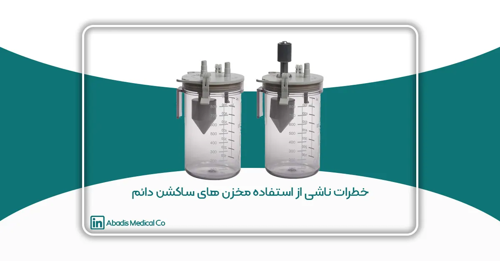

خلاصه
مخزن های ساکشن به طور معمول در هر مرکز درمانی مورد استفاده قرار میگیرند. این مخزن ها سبب می شود که هیچ جزء جامد و مایعی معلق روی هوا باقی نماند و سبب ایجاد عفونت نگردد. همچنین شواهد نشان داده استفاده از مخازن ساکشن می تواند باعث کاهش هزینه ها در حدود 1000 دلار در سال برای هر تخت ICU شود.
مخزن های ساکشن به طور معمول دارای حجم ۸۰۰-۲۰۰۰ میلیمتر و حاوی کیسه ساکشن یکبار مصرف می باشند. جنس دیواره این مخازن سبب می شود مایعات بیولوژیکی در دمای اتاق نگهداری شوند.
برای مشاهده مخزن های ساکشن شرکت مخازن طبی آبادیس کلیک کنید!
تاریخچه
سیستم ساکشن مرکزی در بیمارستان ها از سال ۱۹۵۰ رواج یافت؛ مخزن های جمع آوری در ابتدا شیشه ای بودند و در هر نوبت یا به صورت روزانه تخلیه می شدند و قبل از استفاده بیمار ضد عفونی و یا اتوکلاو می شدند، اما در اوایل دهه ۱۹۸۰ استفاده از کیسه های ساکشن یکبار مصرف رایج تر شد و امروزه در ایالات متحده از کیسه های ساکشن یکبار مصرف استفاده می شود اما هنوز هم مناطقی وجود دارند که از مخازن ساکشن دائمی استفاده می کنند.
سیستم های ساکشن بیمارستانی به اجزا زیر تقسیم می شوند:
۱) پمپ مرکزی : این پمپ ها معمولا در زیر زمین بیمارستان قرار دارند.
۲) لوله کشی : لوله با قطر های بزرگ به پمپ مرکزی با خروجی های اتصال سریع متصل می شوند که اندازه لوله ها از ½ تا۳ دیامتر است و با توجه به محل قرار گیری تاسیسات متفاوت است.
۳) تنظیم کننده ساکشن : در محلی که بیمار است قرار دارد و خلا موجود در سیستم های لوله کشی را کاهش می دهد.
۴) مخزن جمع آوری: مخزن هایی از دیواره های سخت می باشند که برای جمع آوری استفاده می شوند و با استفاده از نیروی جاذبه مانع رسیدن این مایعات به ساکشن تنظیم کننده می شود.
مخازن جمع آوری ساکشن برای جمع آوری مایعات در نظر گرفته شده تا از وارد شدن این مایعات به ساکشن مرکزی جلوگیری گردد.
نظرسنجی از بیمارستان ها
در یک نظرسنجی از پرستاران مراقبت های ویژه بیمارستان ها مشخص شد که ۹۳ درصد از بیمارستان ها پروتکل هایی را برای نحوه عملکرد خود در استفاده از دستگاه ساکشن منتشر کرده اند که نتیجه به صورت زیر بوده است :
از این بیمارستان ها ۵۳ درصد مایل به تغییر مخازن ساکشن بودند و ۴۳ درصد از پاسخ دهندگان معتقد بودند استفاده از مخازن ساکشن دائمی بهترین نتیجه را دارد.
نتیجه گیری
بیمارستان ها به طور معمول در پی استاندارد سازی تمام تجهیزات خود هستند، استفاده از تجهیزات درست و کارآمد سبب صرفه جویی در هزینه ها می شود و همچنین تغییر ساکشن دائم به یکبار مصرف باعث کاهش هزینه ها می گردد.